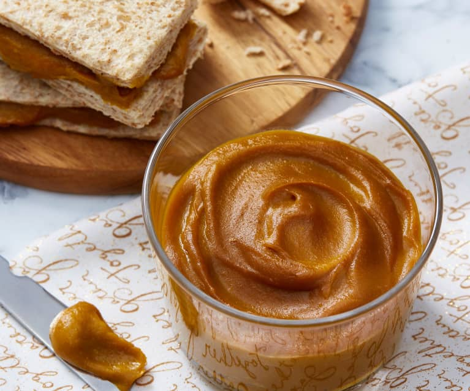

Pumpkin Kaya

Description
A tweak of the traditional Malay jam, this jam is instead made of pumpkin. Healthy and smells as good as it tastes. It's well worth your time. It's best eaten fresh as a spread on bread.
Ingredients
- 4 ¼ cups cubed fresh pumpkin
- 1 cup unsweetened coconut cream
- ⅜ cup brown sugar
- 8 young pandan leaves
Steps
- Place the pumpkin into a steamer insert and set in a pot over one inch of water. Bring to a boil, cover and steam until soft, about 20 minutes. Transfer pumpkin to a blender and blend until smooth with no lumps.
- Combine the pumpkin, coconut cream, brown sugar, and pandan leaves in a pot over medium-low heat. Cook, stirring frequently, until mixture is thick and smooth, about 1 hour; remove leaves and discard. Cool kaya before serving; refrigerate unused portion.